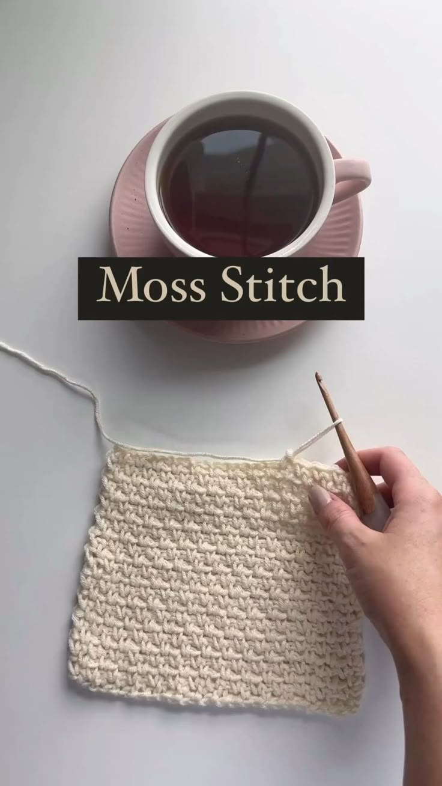
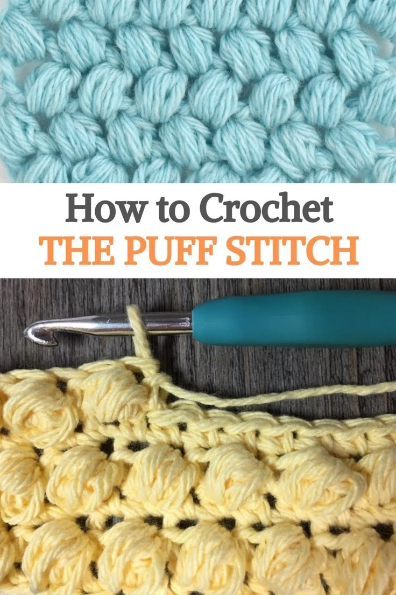
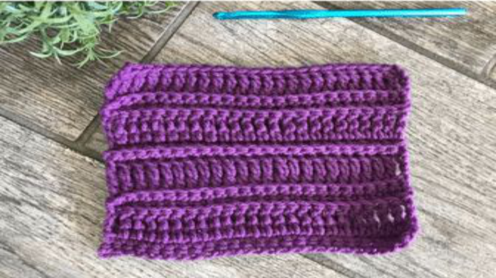
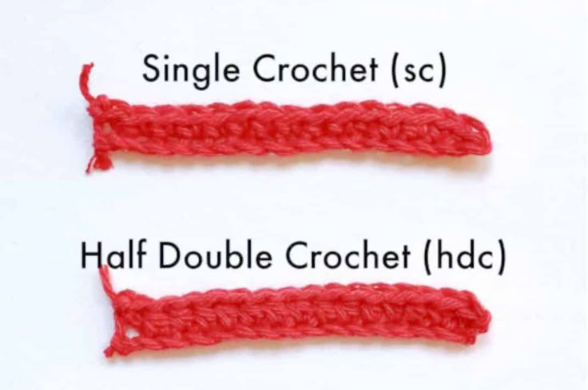

Crochet
What Type of Yarn for What Crochet Texture: A Guide to Matching Yarn and Stitch for Stunning Results
Author: Ladele Simi
19th July, 2025

Introduction
Crochet is not just about patterns-it's also about the texture. The final look and feel of your project depend heavily on the yarn you choose. Whether you're going for soft and fluffy or tight and structured, understanding how different yarns interact with stitch types is essential.
This comprehensive guide will help you match yarn types to various crochet textures, ensuring your creations are as beautiful as they are functional.

1 . Cotton Yarn - Crisp and Defined
Cotton yarn is known for its breathability, strength, and stitch definition. It doesn't stretch much, making it ideal for projects that need structure.
Best for:
- Dishcloths and kitchen items
- Summer wearables
- Bags and totes

Texture matches:
- Moss stitch
- Bobble stitch
- Linen stitch
Pros:
- Excellent stitch clarity
- Machine washable - Cool and breathable
Cons:
- Limited stretch
- Can feel stiff

2 . Acrylic Yarn - Versatile and Soft
Acrylic yarn is a budget-friendly, widely available option. It's soft and comes in many colors and textures.
Best for:
- Afghans and blankets
- Beginner-friendly projects
- Toys and accessories
Texture matches:
- Basket weave stitch
- Ripple stitch
- Cable stitch
Pros:
- Affordable
- Lightweight - Machine washable
Cons:
- Can peal with use
- Not as breathable

3 . Wool Yarn - Warm and Springy
Wool yarn offers elasticity and warmth. It's perfect for garments that need flexibility and insulation.
Best for:
- Sweaters and cardigans
- Hats and mittens
- Cold weather items

Texture matches:
- Post stitches
- Puff stitch - Cable textures
Pros:
- Excellent elasticity
- Warm and cozy
- Blocks well
Cons:
- May cause allergies
- Can shrink if not handled properly

4 . Bamboo Yarn - Smooth and Silky
Bamboo yarn is soft with a beautiful sheen. It drapes well and has a luxurious feel.
Best for:
- Summer shawls
- Lacy tops
- Baby garments

Texture matches:
- Shell stitch
- Fan stitch - Lacy patterns
Pros:
- Hypoallergenic
- Naturally antimicrobial
- Excellent drape
Cons:
- Can be slippery to work with
- Tends to split

5 . Blended Yarns - Best of Both Worlds
Blended yarns combine fibers like cotton/acrylic, wool/bamboo, etc., to offer mixed properties.
Best for:
- Multi-season garments
- Textured home décor - Everyday accessories

Texture matches:
- Mixed stitch textures
- Ribbing - Cluster stitches
Pros:
- Combines benefits of each fiber
- Wide texture range
- Customizable to project needs
Cons:
- Care instructions vary
- May behave unpredictably when blocked

6 . T-Shirt Yarn - Chunky and Eco-Friendly
Made from recycled fabric, T-shirt yarn is thick and ideal for sturdy projects.
Best for:
- Rugs and baskets
- Home décor
- Bags

Texture matches:
- Simple stitches like SC and HDC
- Structured stitch patterns
Pros:
- Very durable
- Eco-conscious
- Great for statement textures
Cons:
- Heavy
- Limited stitch flexibility

7. Velvet and Chenille Yarn - Plush and Luxurious
These yarns are known for their soft, velvety finish and plush texture.
Best for:
- Cozy blankets
- Pillows - Winter accessories
Texture matches:
- Simple stitches to let texture shine
- SC or HDC preferred
Pros:
- Ultra-soft
- Beautiful texture - Great for touchable items
Cons:
- Can shed or break
- Hard to see stitches
8 . Mohair and Alpaca - Fluffy and Airy
Light, fuzzy fibers like mohair and alpaca are best for delicate and airy textures.
Best for:
- Lacy wraps
- Elegant scarves
- Light wear shawls

Texture matches:
- Openwork and lace - Granny stitch variations
Pros:
- Lightweight warmth
- Ethereal texture - Excellent for layering
Cons:
- Can be itchy
- Tricky to frog
How to Choose the Right Yarn for Texture
1. Consider the final use - Is it wearable or decorative?
2. Match fiber to stitch type - Stiff yarns enhance structure; soft yarns improve drape.
3. Think of durability - Will it be washed often?
4. Try swatching - Always crochet a sample square with different yarns.
5. Mind color and ply - Multi-ply yarns give better stitch definition, especially in light colors.
Quick Reference Table
| Yarn Type | Best Textures | Ideal Projects |
|------------------|-------------------------------|--------------------------------|
| Cotton | Defined, dense stitches | Bags, cloths, summer tops |
| Acrylic | Versatile, durable textures | Blankets, toys, scarves |
| Wool | Elastic, post/cable textures | Sweaters, hats, gloves |
| Bamboo | Silky, lace patterns | Shawls, baby clothes |
| Blends | Ribbed, mixed stitches | Accessories, home items |
| T-shirt Yarn | Bold, structured stitches | Rugs, baskets, bags |
| Velvet/Chenille | Plush, simple stitches | Blankets, pillows |
| Mohair/Alpaca | Airy, lace stitches | Shawls, cowls, scarves |
Conclusion
Choosing the right yarn for your crochet texture isn't just a matter of color or softness-it's about how the fiber interacts with your stitches. Whether you're going for bold, fluffy, structured, or draped, there's a perfect yarn out there for your project.
Experiment with different fibers, swatch often, and let texture lead your creativity. Your hooks will thank you-and so will your finished projects!